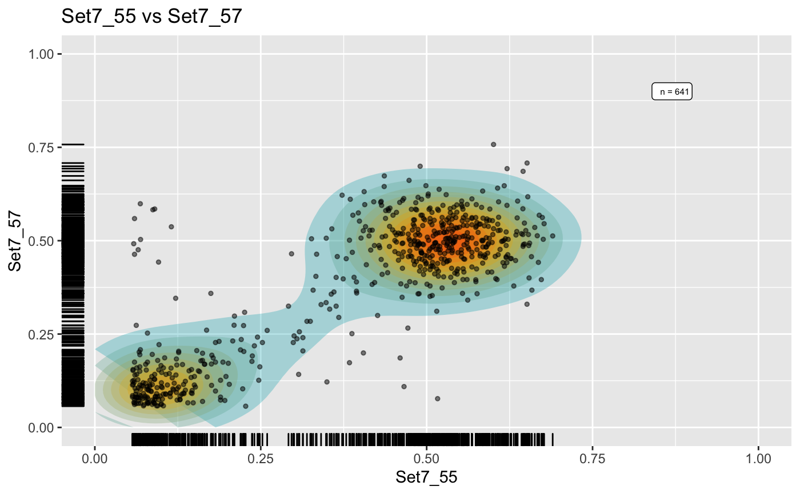
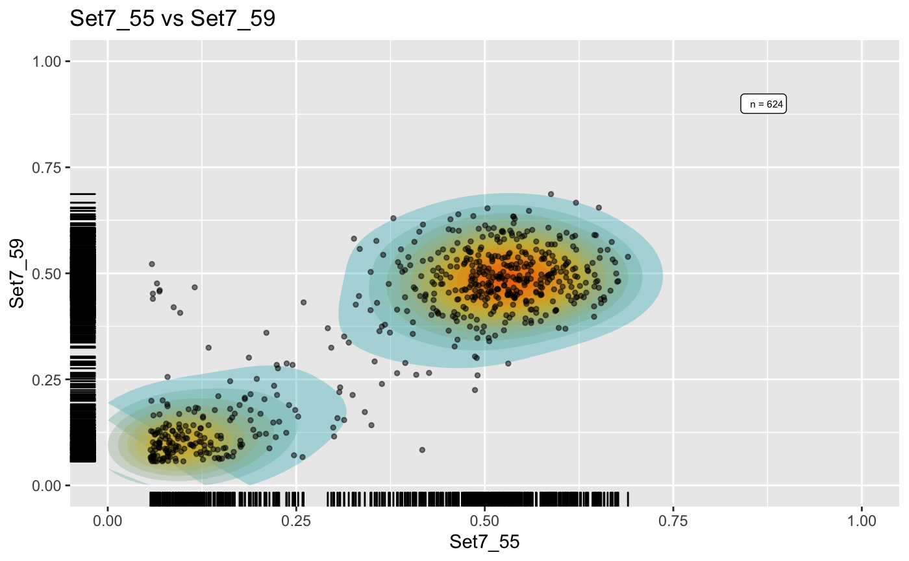
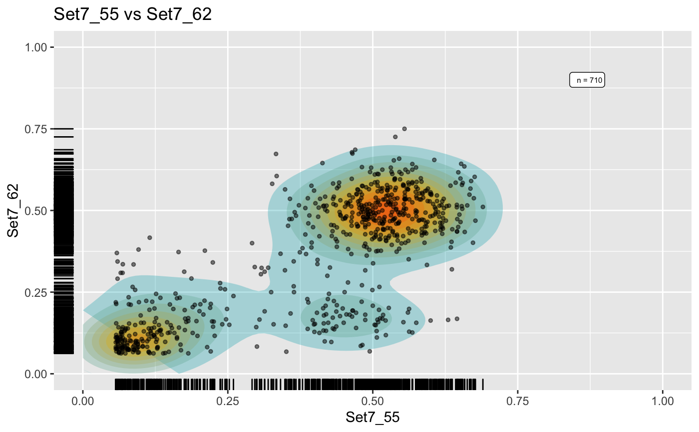
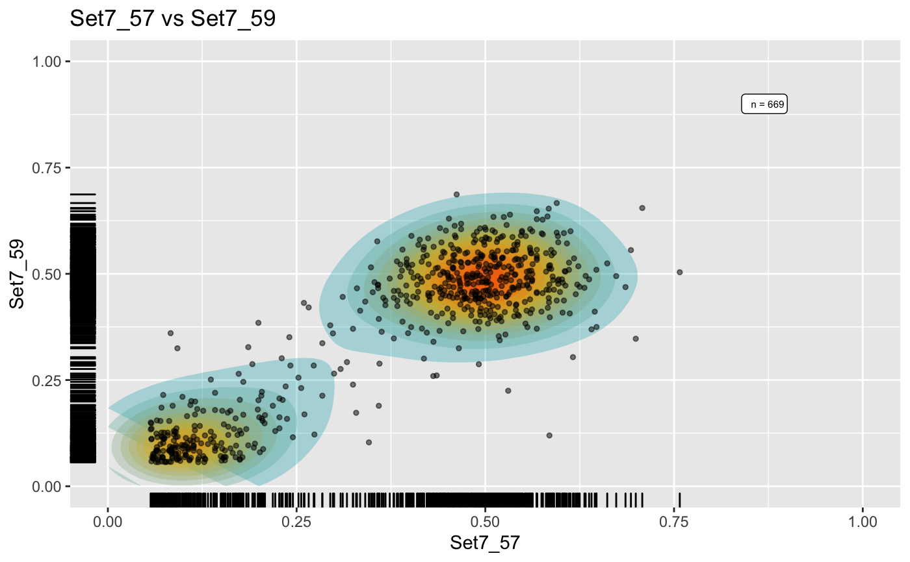
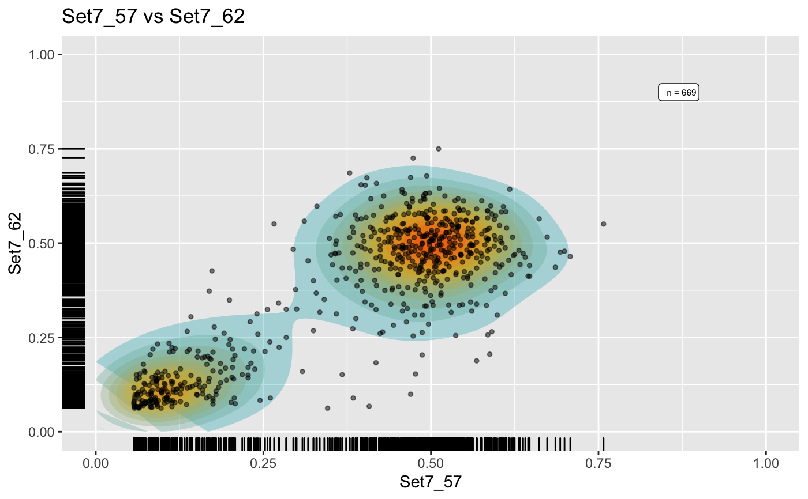
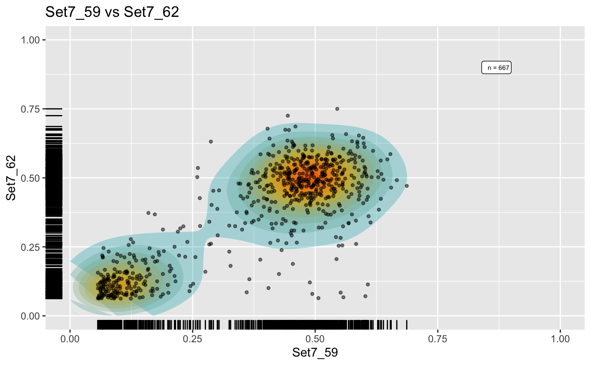

This function can return different types of lists of plots for an evoverse dataset;
the control on which type of plot is generated is given by the ellipsis parameters.
In particular, this function returns:
2D VAF plots (sample versus sample), if there are more than one sample in this dataset.
or a single histogram plot when there one sample in the dataset.
The plotting style depends on the ellipsis parameters:
without parameters, the mutations are left black. These plots are generated by ether function plot_2D_VAF, or plot_1D_VAF;
with clusters = "MOBSTER", the mutations are coloured according to the
MOBSTER clusters. These plots in 2D are generated
by function plot_2D_VAF_MOBSTER, and in 1D by the
MOBSTER S3 plot function (see MOBSTER's documentation);
with clusters = "VIBER", the mutations are plot according to the
VIBER S3 plot function (see VIBER's documentation);
plot.mbst_data(x, ...)
| x | An |
|---|---|
| ... | Only one extra parameter is supported: |
A list of ggplot figures.
Plotting functions used by this S3 function are plot_2D_VAF,
plot_2D_VAF_MOBSTER and plot_1D_VAF.
#>#> [[1]]#> #> [[2]]#> #> [[3]]#> #> [[4]]#> #> [[5]]#> #> [[6]]#>#>#> Error in plot_2D_VAF_MOBSTER(x, w[1], w[2], ...): The input object does not have MOBSTER fits available, aborting.